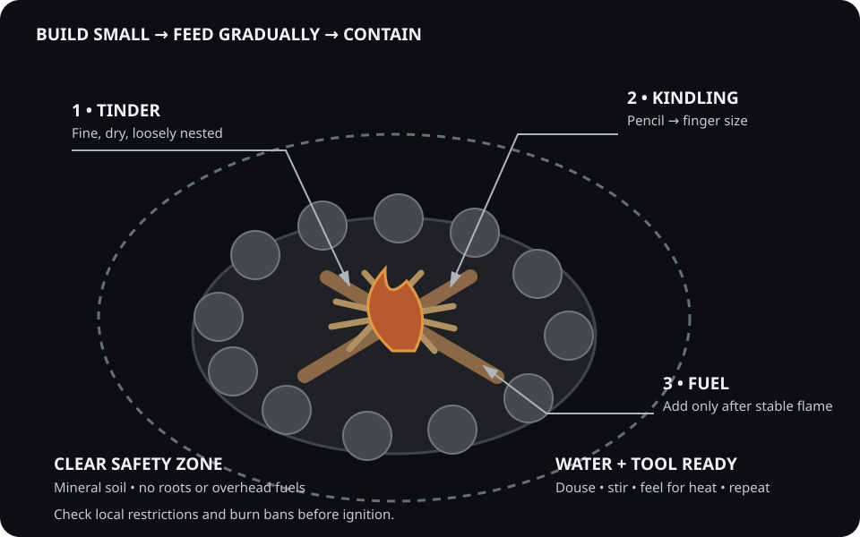

1. Mindset: Control, Not Chaos
Fire is both a survival asset and a risk multiplier. The key is control—understanding conditions, materials, and timing. Respect fire as a system: fuel, oxygen, ignition, and containment.
2. Core Ignition Methods
- Ferrocerium rods: Reliable under wet conditions, works when lighters fail.
- Bic or piezo lighter: Simple, compact, and effective with dry tinder.
- Battery + steel wool: Emergency ignition using common gear.
- Magnifying lens: Infinite fuel source when sunlight cooperates.
3. Tinder & Kindling
Dry plant fibers, fatwood shavings, or cotton with petroleum jelly provide quick ignition. Keep tinder sealed and accessible in a waterproof capsule. Test different materials before a trip.
4. Fire Setup Techniques
- Teepee: Fast heat-up, ideal for quick warmth or signaling.
- Log cabin: Stable and long-burning; great for cooking.
- Long fire: Efficient for sleeping beside in cold conditions.
5. Safety & Environment
Always clear the ground of debris, build on mineral soil, and keep water nearby. Observe local burn bans. Extinguish fully: stir, douse, repeat until cool to the touch.

6. Field Exercise
Set a 10-minute timer. Ignite a fire using your secondary method (not your lighter). Note the materials, weather, and number of attempts. This builds skill and timing awareness.
Researched Gear Shortlist
Paid-link disclosure: If you purchase through an Amazon link below, I may earn a commission at no added cost to you.
-
bayite 4-Inch Ferro RodView on Amazon (paid link)
A large rod and dedicated striker for practicing a dependable backup ignition method.
-
MSR PocketRocket Deluxe StoveView on Amazon (paid link)
A regulated canister stove for outdoor cooking. Never operate a fuel-burning stove in a tent, vehicle, or other enclosed space.